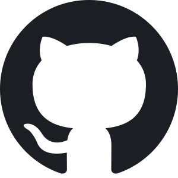

Lieber Besucher, ich danke dir vielmals für den Besuch meiner
Website! Sowohl meine Codingfähigkeiten als auch mein Lebenslauf, meine
Interesse und Passionen
sind hier zu finden. Schreibt mir gerne wegen allem was euch
interessiert.
Skills
- HTML
- CSS
- JavaScript
- PowerPoint
- Excel
- Word
- Social Media
- Scrum
Interessen
- Hunde
- Uhren
- Sport(Crossfit, Schwimmen)
- Musik
- Social Work
- All Things Of Digital Nature
01787205158
oskar.trautmann@googlemail.com

GitHub
LinkedIn
CodePen
In meiner Studien- und Arbeitszeit habe ich unglaublich viele spannende
Stationen erleben und Menschen kenenlernen dürfen.
Biographie
- 2014: Abitur
- 2014: Anstellung als Aux Pair in Kalifornien
- 2014/2015: Praktikum bei .hiv
- 2015: Studienbeginn an der Zeppelinuniversität
- 2016: Praktikum bei Sinnerschrader in Hamburg
- 2017: Praktikum bei ePages in New York
- 2017: Soziale Arbeit in Nepal für Nepals
- 2018: Auslandssemester in Schweden
- 2018: Soziale Arbeit in Kolumbien
- 2019: Studienabschluss in Kommunnikation, Kultur und Management
- 2019: Codecamp bei neuefische